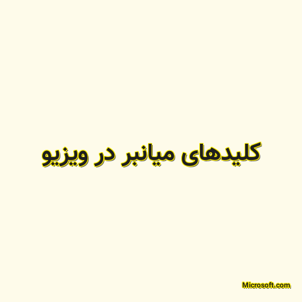

✖
محتوای غیر رسمی
اجازه رسمی پیوند به این پست توسط ساریاب دریافت نشده است؛ و یا نویسنده عضو رسمی بلاگر های آزاد ساریاب نیست.

کلیدهای میانبر در ویزیو
Many users find that using an external keyboard with keyboard shortcuts for Microsoft Visio helps them work more efficiently. For users with mobility or vision disabilities, keyboard shortcuts can be easier than using the touchscreen, and are an essential alternative to using a mouse.